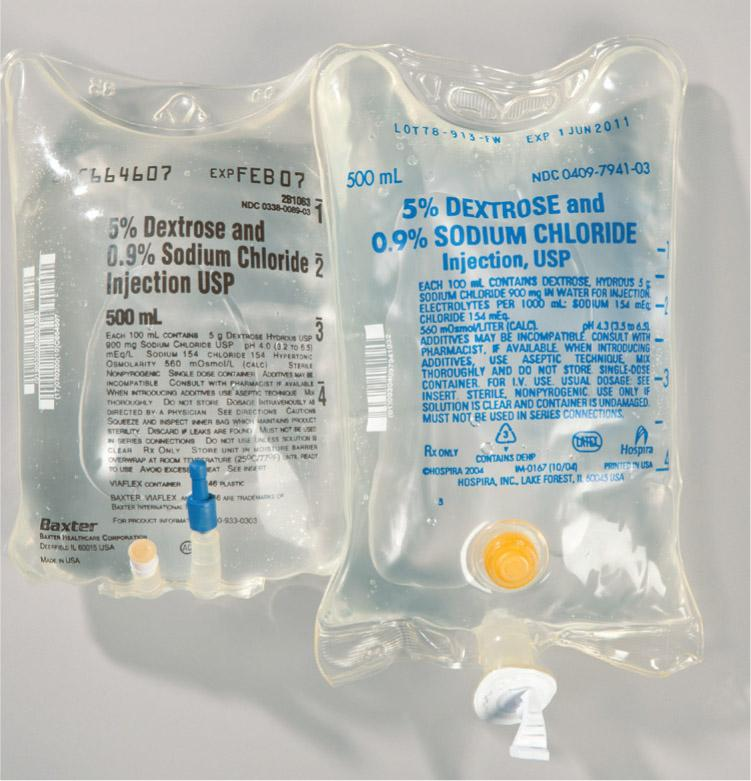

PART 2: TRAINING
Before performing this lab, preview the accompanying Chapter 10 Procedural Lab Competency Assessment Checklist in Appendix B.
10.7 Understand the Resources and Supplies
USP <797> describes standards for preparing CSPs, including LVP solutions. Sterile compounding personnel must be familiar not only with the essential supplies but also those supply items that are specific to the compounding of LVPs.
Essential Supplies
Most sterile compounding procedures require the same essential supply items to be available for use in both an anteroom and a buffer room. For the anteroom, these supplies include foot and head garb that consists of low-lint shoe covers; low-lint head covers and facial hair covers (if needed); face masks; and reusable goggles when eye protection is needed. Hand hygiene supplies include soap in a nonrefillable container; disposable nail cleaners; low-lint, disposable towels or wipers; an alcohol-based hand rub; and sterile 70% IPA. Other garbing supplies include low-lint garments (gowns or coveralls) with sleeves that fit snugly around the wrists and that are enclosed at the neck and sterile, powder-free, disposable gloves.
For the buffer room, supplies include low-lint wipers, agents required for cleaning and disinfecting the primary engineering control (PEC) and cleanroom suite, and waste containers. Sterile 70% IPA is needed to wipe sterile gloves and surfaces. A pen is needed for marking vials and may be needed for paper documentation. Depending on a facility’s policy, sterile compounding personnel may apply an alcohol-based hand rub and don sterile gloves in the buffer room, instead of the anteroom. If so, these essential supply items must be available for use in the buffer room. Facilities may also choose to use carts or tables to hold supply items.
Procedure-Specific Supplies
In addition to the previously listed essential supplies, each sterile compounding procedure requires supply items specific to the procedure being performed. The type, number, and amount of procedure-specific supply items are determined by sterile compounding personnel prior to performing the procedure, based on information provided on the CSP label and the ingredient label. After reading these labels, personnel perform one or more calculations that identify the amount of medications needed to prepare the CSP. This information, in turn, dictates the number, size, and types of syringes needed for the procedure. Most sterile compounding procedures require the use of medication vials, an IV bag or other dispensing device, syringes, needles, and sterile 70% IPA swabs. If appropriate, sterile compounding personnel should obtain tamper-evident, sterile, adhesive seals. This type of seal is applied to the injection port of an IV bag or across the needle cap of a syringe as a safety measure.
LVP Supplies
The process of compounding LVP preparations involves the manipulation of syringes and needles as well as vials and IV base solutions. Familiarity with the appearance of these items as well as any specific handling requirements is essential to sterile compounding procedures.
Vials
A vial is a sealed, sterile container, made of plastic or glass, that has a septum through which sterile compounding personnel add or withdraw fluid. Vials contain a sterile medication either in a liquid form or in a powdered form, which must be dissolved with a liquid diluent. The most commonly used diluents are sterile water for injection (SWFI) and normal saline.
Because a vial is a closed-system container, or a container in which air cannot flow into or out of freely, sterile compounding personnel use a milking technique to easily and safely transfer contents between a vial and a syringe. Using the milking technique is an important element of working with vials. This technique prevents aspiration and other problems associated with pressure.
To perform the milking technique, personnel add positive pressure to the closed system by injecting into the vial an amount of air that is equal to, or slightly less than, the volume of liquid to be withdrawn from the vial. The air from the syringe is injected, a small amount at a time, into the vial, while alternately transferring small volumes of liquid from the vial into the syringe. The syringe measurement is taken where the shoulder of the plunger touches the barrel of the syringe closest to the needle (see Figure 10.3).
View long description Hide description
The labels from top to bottom are as follows: air within vial, fluid within vial, vial septum, critical site that must receive first air, 15 milliliters syringe measurement taken here at the shoulder of the plunger, and critical site of inner plunger shaft that must not be touched.
When handling a vial, sterile compounding personnel must also be careful to avoid coring. Coring is an undesired event that occurs when a needle is inserted incorrectly into the rubber septum or vial stopper, causing a small bit of the septum to tear off and contaminate the solution inside the vial. To avoid coring, personnel should insert the needle into the vial’s septum with the bevel of the needle pointing upward and with the needle bending slightly upon contact. If coring does occur, sterile compounding must dispose of the contaminated vial and needle-and-syringe unit and repeat the procedure using new supplies.
IV Base Solutions
An IV base solution is commonly provided by the manufacturer in a flexible plastic bag. The bag’s material may be a combination of polyvinyl chloride (PVC) and a plasticizer (such as di[2-ethylhexyl] phthalate [DEHP]) or another type of plastic that allows the bag to expand when fluid is injected into the container and to contract when fluid is withdrawn from it. Therefore, unlike the closed system of a vial, air pressure within the bag can fluctuate, requiring personnel to take no equalization measures.

The injection port of an IV bag may be one of two types, depending on the manufacturer: a button injection port (also known as a nipple injection port) or a tail injection port. A button injection port can be found near the bottom of an IV bag’s face, or the bottom front of an IV bag where the manufacturer’s printed information is located. A tail injection port is located at the bottom of an IV bag. Recognizing these two different types of ports is important to the placement of an IV bag in a PEC. Sterile compounding personnel must ensure that a bag’s position in a PEC allows first air from the high-efficiency particulate air (HEPA) filter to a bag’s injection port, which is a critical site. The port itself is constructed of a material that is not prone to coring. Consequently, unlike a vial, personnel should insert a needle directly into a bag’s injection port without regard to the position of the needle bevel and without creating any bend to the needle.
Critical Sites of Essential Supplies and LVP Supplies
Before beginning preparatory procedures in the anteroom, sterile compounding personnel must recall the critical sites of the supplies. Identifying the critical site of each supply item determines the proper procedure for handling the supply item within a PEC.
The critical sites of a needle and syringe include the needle, syringe tip, and the piston plunger and inner plunger shaft of the syringe (see Figure 10.4). The critical sites are provided by the manufacturers in a sterile form and, therefore, should not be swabbed with sterile 70% IPA prior to use.
View long description Hide description
The labels from top to bottom are as follows: critical site including needle tip with bevel, needle shaft, needle hub, and tip of syringe; syringe measurement point; and critical site including inner plunger shaft.
The critical sites of the other LVP supplies used for the Chapter 10 Procedural Lab include the injection port of the IV base solution and the vial septum. These critical sites must be swabbed with sterile 70% IPA prior to penetration to decrease the likelihood of contaminating the solution during injection or withdrawal procedures.
After identifying the critical sites of all supply items, sterile compounding personnel must exercise care not to contaminate the critical sites of any of the items through touch contamination, shadowing, or incorrect placement of the item within a PEC. (For additional assistance on the handling of critical sites of sterile compounding supplies, refer to Chapter 5 of this textbook.)